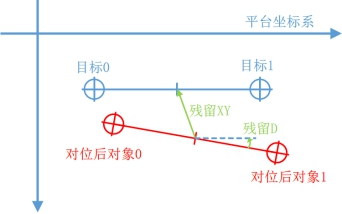
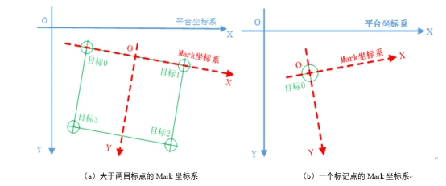
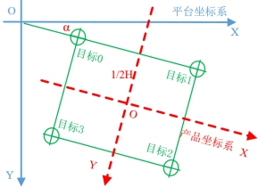
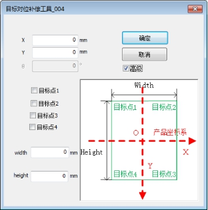

Hệ tọa độ sản phẩm: Hệ tọa độ lấy tâm sản phẩm làm gốc tọa độ, hướng chiều rộng và chiều cao tương ứng làm trục X và trục Y.


Như Hình 1, trong các dự án thực tế, nếu giữa mục tiêu (Target) và đối tượng (Object) sau khi căn chỉnh (alignment) vẫn tồn tại một sai số vị trí cố định, ta có thể loại bỏ sai số này thông qua bù trừ căn chỉnh.

Tính năng của công cụ Bù trừ căn chỉnh mục tiêu là: sau khi tọa độ hình ảnh đã được chuyển đổi sang tọa độ bàn máy (platform coordinates) và trước khi tính toán căn chỉnh, công cụ sẽ dựa trên lượng bù trừ (offset) và phương thức bù trừ đầu vào để hiệu chỉnh tổ hợp tọa độ bàn máy của các điểm Mark mục tiêu. Việc sử dụng các điểm Mark đã hiệu chỉnh này để tính toán căn chỉnh sẽ giúp loại bỏ sai số vị trí cố định giữa mục tiêu và đối tượng.
| Phân loại | Tên tham số | Mô tả tham số |
|---|---|---|
| Cửa sổ thuộc tính | Kiểu bù trừ căn chỉnh mục tiêu | Hệ tọa độ Mark: Hệ tọa độ được cấu thành từ đường nối hai điểm đầu tiên của vector tọa độ bàn máy đầu vào và đường trung trực của nó. Hệ tọa độ sản phẩm: Hệ tọa độ lấy tâm sản phẩm làm gốc tọa độ, hướng chiều rộng và chiều cao tương ứng làm trục X và trục Y. |
| Lượng bù trừ căn chỉnh | Lượng bù trừ đầu vào. | |
| Chiều rộng sản phẩm | Chiều rộng quy cách thực tế của sản phẩm, chỉ sử dụng khi chọn Hệ tọa độ sản phẩm để tính toán hệ tọa độ, tương ứng với "Width" trong sơ đồ giao diện nâng cao. | |
| Chiều dài sản phẩm | Chiều dài quy cách thực tế của sản phẩm, chỉ sử dụng khi chọn Hệ tọa độ sản phẩm để tính toán hệ tọa độ, tương ứng với "Height" trong sơ đồ giao diện nâng cao. | |
| Cửa sổ hình ảnh | Không | Không |
| Chuỗi dữ liệu (Data Chain) | Vector tọa độ bàn máy mục tiêu | Vector tọa độ bàn máy mục tiêu ban đầu cần được bù trừ. |
| Bù trừ động | Quyết định việc có tự động tính toán và thực hiện bù trừ giá trị trong dự án hay không. |
|
| Lượng bù X | Khi sử dụng bù trừ động, vector tọa độ bàn máy mục tiêu sẽ được bù thêm giá trị X này dựa trên lượng bù trục X cố định. | |
| Lượng bù Y | Khi sử dụng bù trừ động, vector tọa độ bàn máy mục tiêu sẽ được bù thêm giá trị Y này dựa trên lượng bù trục Y cố định. | |
| Lượng bù góc | Khi sử dụng bù trừ động, vector tọa độ bàn máy mục tiêu sẽ được bù thêm giá trị góc D này dựa trên lượng bù góc cố định. | |
| Là lượng bù động tuyệt đối | Nếu là "Có", lượng bù trong cột thuộc tính sẽ tự động đồng bộ hóa với lượng bù được liên kết; nếu là "Không", sau mỗi lần thực thi công cụ, lượng bù trong cột thuộc tính sẽ cộng thêm giá trị bù từ chuỗi tham số liên kết. |
| Phân loại | Tên tham số | Mô tả tham số |
|---|---|---|
| Cửa sổ giám sát | Xuất vector tọa độ bàn máy mục tiêu | Kết quả vector tọa độ bàn máy mục tiêu sau khi tính toán bù trừ. |
| Tọa độ tâm hệ tọa độ sản phẩm | Giá trị tọa độ vị trí gốc của hệ tọa độ sản phẩm sau khi bù trừ (chỉ kích hoạt khi chọn kiểu Hệ tọa độ sản phẩm). | |
| Góc đầu ra | Giá trị góc của trục X trong hệ tọa độ sản phẩm sau khi bù trừ (chỉ kích hoạt khi chọn kiểu Hệ tọa độ sản phẩm, công cụ hiện tại chưa triển khai tham số này). | |
| Kết quả thực thi | Kết quả thực hiện của công cụ. | |
| Thời gian thực thi | Thời gian thực hiện của công cụ. | |
| Cửa sổ hình ảnh | Không | |
| Chuỗi dữ liệu | Vector tọa độ bàn máy mục tiêu | Kết quả vector tọa độ bàn máy mục tiêu sau khi tính toán bù trừ, dùng cho các công cụ tiếp theo, giống với cửa sổ giám sát. |
Định nghĩa của hệ tọa độ Mark là: trong hệ thống căn chỉnh có từ hai điểm Mark trở lên, tia đi từ điểm Mark 0 đến điểm Mark 1 là hướng dương của trục X, trung điểm của điểm Mark 0 và điểm Mark 1 là gốc tọa độ. Hướng đi qua gốc tọa độ, vuông góc với trục X và tuân theo quy tắc hệ tọa độ tay trái là hướng dương của trục Y, như hiển thị trong Hình 2 (a).
Khi chỉ có một điểm Mark, gốc tọa độ được thiết lập tại điểm Mark 0, hướng trục X là góc của sản phẩm (đại diện bởi điểm Mark) trong hệ tọa độ bàn máy, trục Y đi qua gốc tọa độ và vuông góc với trục X, cũng tuân theo quy tắc hệ tọa độ tay trái, như hiển thị trong Hình 2 (b). Kịch bản ứng dụng căn chỉnh một điểm Mark thường thấy trong việc gắp của tay máy đầu dò (probe), căn chỉnh đổ keo trên bàn máy XY và các ứng dụng căn chỉnh khác.

Bù trừ hệ tọa độ sản phẩm nghĩa là thực hiện bù trừ trong hệ tọa độ của chính sản phẩm. Khi bù trừ xoay, việc xoay sẽ lấy gốc O của hệ tọa độ sản phẩm làm tâm; khi bù trừ tịnh tiến, việc di chuyển sẽ theo hướng X và Y của hệ tọa độ sản phẩm sau khi đã xoay.
Gốc của hệ tọa độ sản phẩm được thiết lập trùng với tâm của sản phẩm hình chữ nhật. Tọa độ bàn máy của gốc này được tính toán bằng cách kết hợp tọa độ điểm mục tiêu đầu vào, mối quan hệ vị trí và kích thước chiều rộng/chiều dài thực tế của sản phẩm. Hướng trục X của hệ tọa độ sản phẩm song song với chiều rộng sản phẩm hướng sang phải, hướng Y song song với chiều cao sản phẩm hướng xuống dưới, tuân theo hệ tọa độ tay trái. Hệ tọa độ sản phẩm được hiển thị trong Hình 3.

Đây là điều kiện phán đoán kiểu đầu vào cho bù trừ động. Khi giá trị là True, lượng bù X/Y/Góc được liên kết cộng với lượng bù cố định tương ứng sẽ được dùng làm lượng bù trừ căn chỉnh mục tiêu cuối cùng. Tính năng này được sử dụng trong các kịch bản bù trừ tự động của dự án: sau khi căn chỉnh, camera thực hiện đo lường để tính toán lượng bù động, sau đó đưa giá trị này vào phần bù trừ. Khi giá trị là False, bù trừ động sẽ không được sử dụng, chỉ áp dụng bù trừ cố định.
Khi sử dụng Hệ tọa độ Mark, hệ tọa độ được xác định dựa trên đường nối và đường trung trực của hai điểm đầu tiên trong vector tọa độ bàn máy đầu vào. Lúc này, giao diện nâng cao chỉ đóng vai trò là hộp thoại để nhập lượng bù trừ.
Khi sử dụng Hệ tọa độ sản phẩm, giao diện nâng cao của công cụ sẽ như Hình 4. Các ô nhập X, Y, θ ở phía trên giao diện vẫn là các ô nhập lượng bù đơn giản. Tuy nhiên, phần được khoanh vùng đỏ ở phía dưới thể hiện các cách tính toán hệ tọa độ sản phẩm khác nhau tùy thuộc vào vị trí điểm mục tiêu đầu vào. Tương ứng với sơ đồ bên phải, kỹ sư cần tích chọn các ô kiểm (checkbox) điểm mục tiêu phù hợp với yêu cầu thực tế của dự án và nhập chiều rộng, chiều dài theo quy cách thực tế của sản phẩm.

Lưu ý mối quan hệ giữa việc tích chọn ô kiểm điểm mục tiêu và thứ tự các điểm trong vector bàn máy mục tiêu đầu vào:
参见“\Samples\标准标定+基准两点对位.gvp”